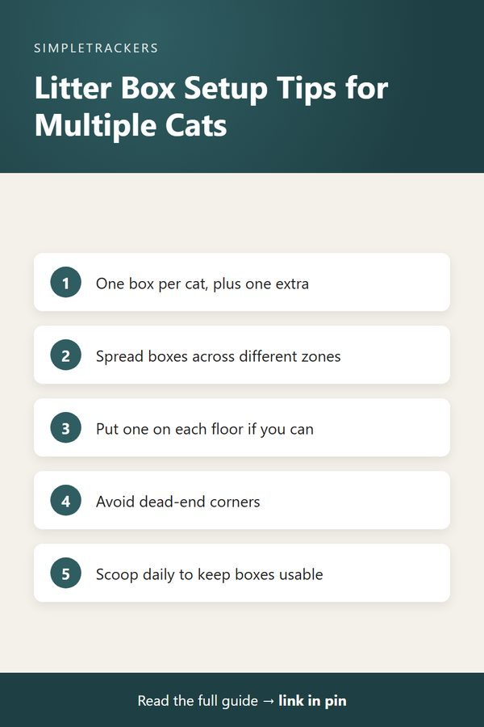

How Many Litter Boxes Do You Need for Multiple Cats?
← Back to the Complete Multi-Cat Household Guide

Key takeaways
- The rule: one litter box per cat, plus one extra. Two cats need three boxes.
- Placement beats quantity: three boxes in one closet count as one location. Spread them across zones and floors.
- Scooping changes the math: if you scoop less than daily, you need more boxes.
- Check that it works: track box use for two weeks before and after any change.
The Short Answer: One Per Cat, Plus One
If you're wondering how many litter boxes your multi-cat household actually needs, the practical guideline is straightforward: provide one box per cat, plus one extra.
| Cats in your home | Litter boxes to provide |
|---|---|
| 2 cats | 3 boxes |
| 3 cats | 4 boxes |
| 4 cats | 5 boxes |
| 5 cats | 6 boxes |
This isn't a guess. It comes from decades of cat behavior observation and from the real experiences of thousands of multi-cat households. It works because it accounts for individual preferences, competition, and the gaps that inevitably appear between cleanings.
The reasoning is simple: cats have preferences about which box they use, and they avoid boxes that another cat is actively using or has recently used. With only one box per cat, you're relying on perfect timing and cooperation. The extra box absorbs that friction. Without the buffer, you're much more likely to see elimination outside the boxes, which is the signal that something in your setup isn't working.
Why the Extra Box Matters
Resource competition is real in multi-cat households. Cats are territorial about litter boxes in ways many owners don't immediately recognize. One cat may sit near the box to control access, or two cats with different schedules may compete for the same box at peak times. A cat that's blocked from their preferred box might use a less desirable spot rather than wait or risk confrontation.
The extra box breaks this bottleneck in two ways:
- An escape route. When the main boxes are occupied, or one cat is guarding access, there is always somewhere else to go.
- A clean backup. Every box gets neglected sometimes. With several options, a cat isn't forced to use a dirty box when a fresh one is nearby.
Placement Beats Quantity
Three boxes crammed in the same closet effectively function as one location. Cats think about litter boxes in terms of zones and access routes. A box in a basement corner is a different location from a box on the second floor, even if they're only steps apart.
Placement checklist
- One box near the active living spaces
- One box in a quieter zone
- One box on a different floor, if your home has more than one level
- No boxes at the end of dead-end corridors, where a cat can be cornered by another cat
Good placement means a cat always has a nearby, accessible option without having to cross another cat's territory to reach it.

Signs Your Current Setup Isn't Working
If your multi-cat household is set up well, you'll rarely see evidence of litter box issues. These are the observable signals that something is wrong:
- Elimination outside the boxes. The clearest signal. If a cat regularly urinates or defecates anywhere other than a litter box, your setup isn't meeting their needs.
- All traffic on one box. Every visit goes to a single box even when others are available.
- Hesitation or waiting. A cat pauses or holds back when another cat is near a box.
- Hurried visits. Rushed entries and exits suggest a cat is anxious about access.
When to mention it to your vet
These observations are worth raising at your next veterinary visit, especially if they're new or persistent. Sometimes they point to a simple fix like rearranging boxes; sometimes they point to something your vet should know about. Either way, documenting what you actually see is far more useful than guessing.
Cleaning Frequency Changes the Math
The number of boxes you need also depends on how often you scoop. Neglected boxes create avoidance no matter how many alternatives you provide. A cat will hold it or find another location rather than use a dirty box.
| How often you scoop | What it means for box count |
|---|---|
| Twice a day | Can work well with fewer boxes |
| Once a day | The one-per-cat-plus-one rule works well |
| A few times a week | Add more boxes so at least one stays acceptably clean |
How to Tell If It's Actually Working
The best indicator is simple observation over time. Memory alone won't capture it. A quick record does.
- Note who uses which box. Record which cat uses which box and how often, and look for preferences.
- Record two weeks before a change. Before adding a box or moving one, log a baseline.
- Record two weeks after. Compare accidents, which boxes get used and how evenly visits are spread.
This is exactly what multi-cat household tracking is for. You'll see objective patterns in box usage and behavior that you'd otherwise miss. When you bring observations like these to your veterinarian, whether everything is working smoothly or something seems off, you're giving them real data instead of impressions. The conversation changes from "I think something might be wrong" to "Here's what I've observed over the past two weeks."
To start tracking litter box usage and other multi-cat observations systematically, download the Multi-Cat Household Health & Litter Tracker. It's pre-formatted to log box usage patterns along with other household observations, so you can see what's actually happening with your setup over time.